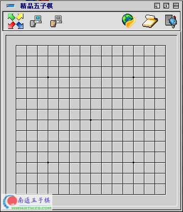

精品五子棋
#1 精品五子棋 作者：有志青年 发表时间：2006-2-6 16:00:08

#2 Re:精品五子棋 作者：zjhiverson 发表时间：2006-2-20 0:35:34
我想下载啊,不知道可不可以赢高手呢#3 Re:精品五子棋 作者：飞翔 发表时间：2006-2-22 9:25:32
棋力怎么样 ，有黑石强么#4 Re:精品五子棋 作者：neverlandz 发表时间：2006-2-22 23:02:59
正找这样的东东呢，谢谢了
#5 Re:精品五子棋 作者：redchina 发表时间：2006-2-28 12:06:14
试试看这个棋力如何#6 Re:精品五子棋 作者：zz06zz 发表时间：2006-5-15 11:39:00
试过了，棋力很弱的！#7 Re:精品五子棋 作者：妍妍 发表时间：2006-6-13 8:32:22
请问你的这个游戏的人工智能是用的棋谱还是什么算法？能告诉我吗？#8 Re:精品五子棋 作者：天屎下饭 发表时间：2006-6-22 6:50:08
这个好么？？？棋力不强不要，先下了在说
#9 Re:精品五子棋 作者：周忆 发表时间：2006-7-12 13:46:21
这个软件的棋力太一般了，我是普通爱好者都赢了，还是电脑先手#10 Re:精品五子棋 作者：不落的太阳 发表时间：2007-5-2 14:08:41
棋力不强#11 Re:精品五子棋 作者：月明竹青曲悠 发表时间：2007-6-15 13:07:09
怎么没什么哦？#12 Re:精品五子棋 作者：月明竹青曲悠 发表时间：2007-6-15 13:15:32
和它下了3盘，棋力一点也不强，我赢2盘，它赢一盘还是先手长连，晕！！！#13 Re:精品五子棋 作者：天上掉个馅饼 发表时间：2007-7-18 16:34:36
价值一般
#14 Re:精品五子棋 作者：吾本沉默 发表时间：2007-8-22 7:52:06
还要加油。。。#15 Re:精品五子棋 作者：笨笨*飞呀飞 发表时间：2007-8-25 21:36:33
太。。。。。。。弱了！！